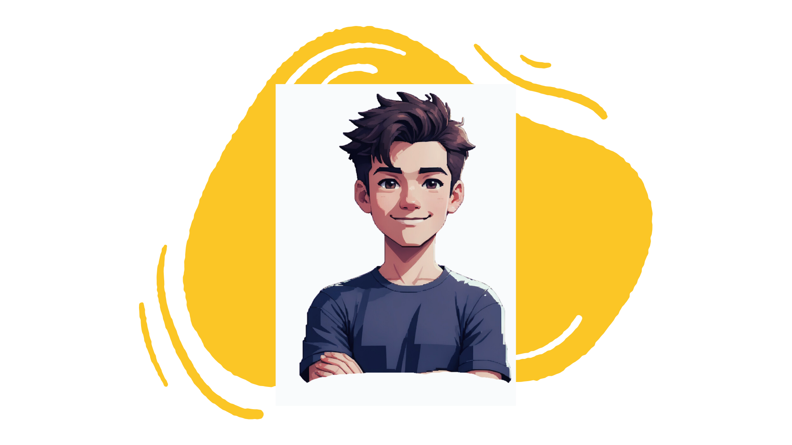

Olá, Mundo!👋
Fico feliz que esteja vendo isso! Eu me chamo Caique, estou na
trilha para ser um Desenvolvedor Fullstack e este é o meu primeiro
projeto Front-End. Estou feliz por estar conhecendo tantas novas
tecnologias.
Tenho alguns hobbies, como: Trilhas 🥾, Música 🎵, Filmes 🎬 e
Tecnologia 💻.
Que tal nos conhecermos? Me mande uma mensagem pelo LinkedIn ou me
siga no GitHub.
Um pouco sobre mim:

Tecnologias Utilizadas:
Sobre o Projeto:
Esse projeto tem como intuito proporcionar um primeiro contato com
o Desenvolvimento Front-End.
Aqui, pude conhecer e testar algumas tecnologias, como HTML, CSS e
JavaScript. O projeto em si consiste em um portfólio para
apresentação, trazendo algumas informações pessoais e uma página
de contato para preenchimento de um formulário.
Experimentei alguns conceitos, como: marcação em HTML, introdução
ao CSS, eventos, funções em JavaScript, tipografia,
responsividade, colorometria e muito mais...